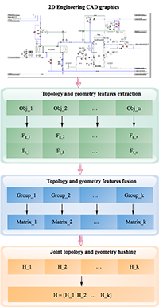
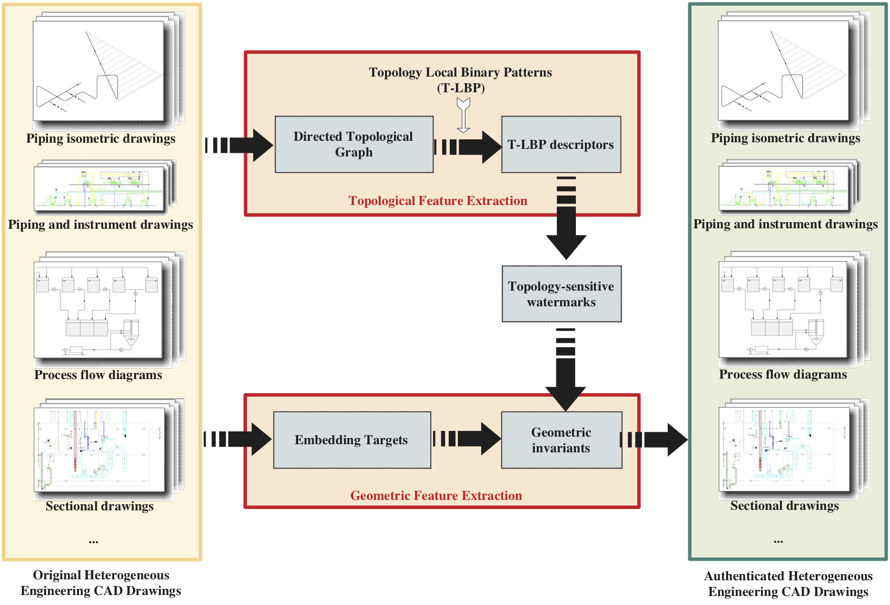
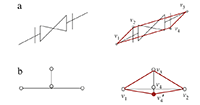
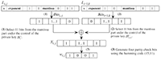
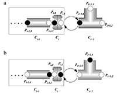
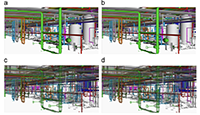

Zhiyong Su
Associate Professor
School of Automation, Nanjing University of Science and Technology
Mail address: 200 Xiaolingwei Road, Nanjing, China
Email: suzhiyong@njust.edu.cn
Phone: (+86-25)-84315467-715
|
Zhiyong SuAssociate ProfessorSchool of Automation, Nanjing University of Science and Technology Mail address: 200 Xiaolingwei Road, Nanjing, China Email: suzhiyong@njust.edu.cn Phone: (+86-25)-84315467-715 |
Biography |
I am currently an associate professor at School of Automation, Nanjing University of Science and Technology. I received my BS degree and MS degree in computer science from the School of Computer Science and Engineering, Nanjing University of Science and Technology in 2004 and 2006, respectively, and received my PhD from the Institute of Computing Technology, Chinese Academy of Sciences in 2009, China. |
Research |
| My research interests are in computer graphics, computer vision, image processing and argument reality. |
Selected Publications |
|  | Robust 2D Engineering CAD Graphics Hashing for Joint Topology and Geometry Authentication via Covariance-Based DescriptorsZhiyong Su, Ying Ye, Qi Zhang, Weiqing Li, Yuewei Dai IEEE Transactions on Information Forensics and Security, 2018. |
|  |
Zhiyong Su, Lang Zhou, Yaobin Mao, Yuewei Dai, Weiqing Tang Multimedia Tools and Applications, 76(20), 20663-20689,2017. |
Topology based 2D engineering drawing and 3D model matching for process plant Rui Wen, Weiqing Tang, Zhiyong Su Graphical Models, 92: 1-15, 2017. |
|
 |
Measuring 3D process plant model similarity based on topological relationship distribution Rui Wen, Weiqing Tang, Zhiyong Su Computer-Aided Design and Applications, 14(4): 422-435, 2017. |
|  | Topology Authentication for Piping Isometric Drawings Zhiyong Su, Xin Yang, Guangjie Liu, Weiqing Li, Weiqing Tang Computer-Aided Design, 66(9): 33-44, 2015. |
|  | Authenticating topological integrity of process plant models through digital watermarking Zhiyong Su, Lang Zhou, Guangjie Liu, Jianshou Kong, Yuewei Dai Multimedia Tools and Applications, 73(3): 1687–1707, 2014. |
|  | Watermarking 3D CAPD models for topology verification Zhiyong Su, Weiqing Li, Jianshou Kong, Yuewei Dai, Weiqing Tang Computer-Aided Design, 45(7): 1042-1052, 2013. |
|  | Topology authentication for CAPD models based on Laplacian coordinates Zhiyong Su, Lang Zhou, Weiqing Li, Yuewei Dai, Weiqing Tang Computers & Graphics, 37(4): 269–279, 2013. |
Professional Activities |
|